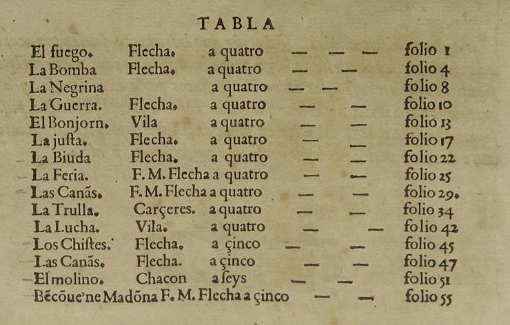
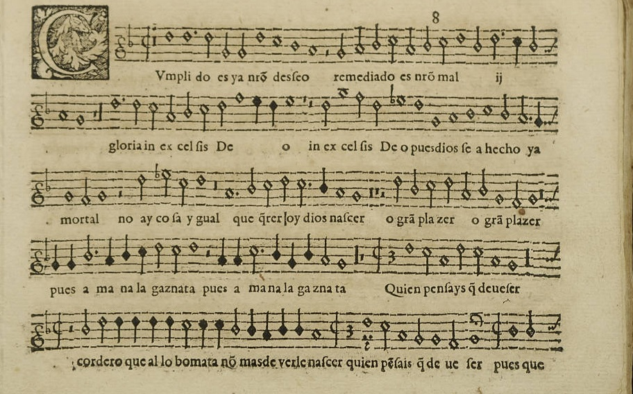

Presentación

Más sobre Mateo Flecha

1481-1553
Lo encuentras en: Presentación Beamer FLECHA.pdf o FLECHA.md
Github Flecha Beamer
La Trulla de Bartomeu Cárceres
Lo encuentras en: Presentación ENSALADAS.html
Github Ensaladas
Lo encuentras en: Ebook VICTORIA.epub
Github Ebook Victoria
Lo encuentras en: guion.pdf o guion.html
Github Guion pdf
Github Guion HTML
¡¡¡Pasamos al contenido!!!